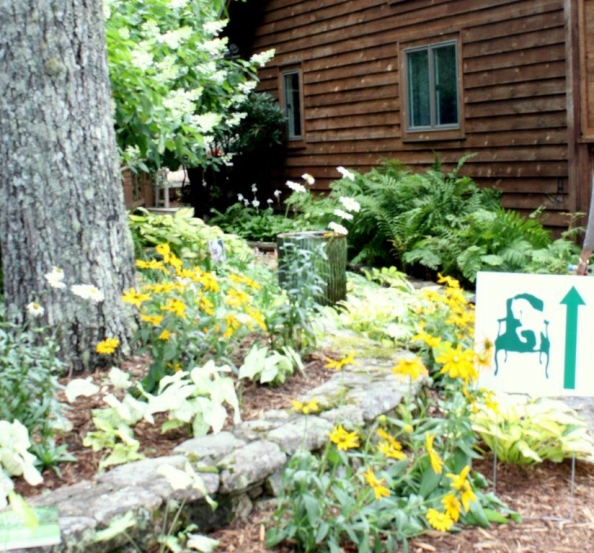
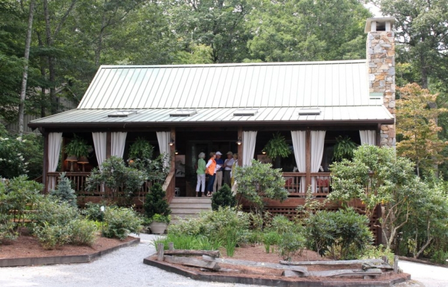
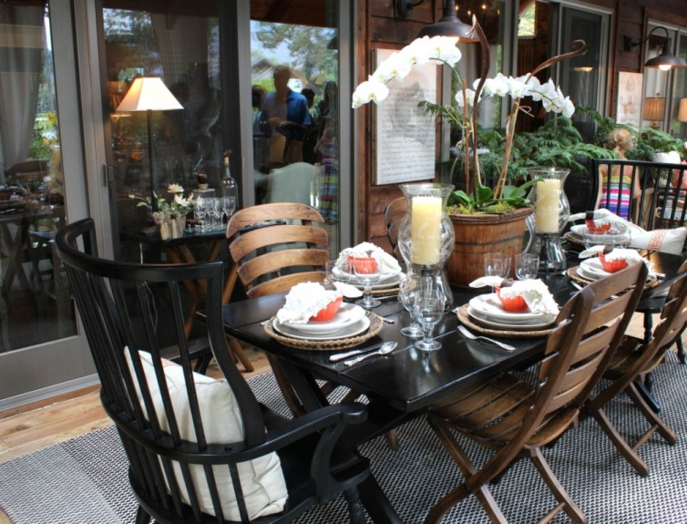

.png)
.PNG)
.PNG)
.PNG)
.PNG)
.PNG)
.JPG)
.JPG)
.PNG)
.PNG)



Happy Friday! I have saved my favorite house from last weekend’s Cashiers Designer Showhouse tour to share with you today. We have already seen the main house and the bunk house. Today we are touring the guest house on the property known as Serenity Acres. Unlike the bunk house where the porch is tucked into the side of the cottage, the curtained porch of the guest house covers the entire front of the home.
It was decorated by Ann Sherrill, owner of my favorite shop in Cashiers, Rusticks.
I love the twig furniture she used on this porch.
Now walk on into the house and take a look at the beautiful kitchen done by our hometown girl, Francie Hargrove.

Her attention to detail is so evident in the drapes. (I really want this fabric!)
Look at the other end of this large space, and you will see the living area (also done by Francie.)

Behind the kitchen/living area was a small hallway with this beautiful centerpiece. You can see two bedrooms beyond the hall. Unfortunately, I did not get any photographs of those rooms. The one on the right by Robert Brown was much too modern for my taste, and the one on the left, by Barbara Heath was so crowded with people by the time I got around there, I could not get in for photographs (but you can see the interesting bed there.)

The stables for the estate were further down the path..but no horses were in there…
Instead, the Showhouse Cafe was set up offering box lunches with soups, salads,and desserts. (It smelled much better than horses!)

The horse stalls were full of shops from local artisans, and one other building had an additional store.

The Cashiers Designer Showhouse not only showcases the work of interior designers, but also the creations of a number of talented landscape designers. Here are a few photos of some of the many wonderful projects seen at the tour.

 And that wraps up our tour. I do hope that we will return to enjoy another showhouse full of gorgeous rooms again next year in another amazing location!
And that wraps up our tour. I do hope that we will return to enjoy another showhouse full of gorgeous rooms again next year in another amazing location!

And I hope you liked the guest house as much as I did. If you are interested, the entire estate is for sale for $3,375,000 and includes 39 acres.
I will leave you with a sneak peak of my next post…the inn where we stayed for this trip!
until next time… 


.PNG)
Loved, Loved everything inside and out. So appreciate you great designers.
How do I find out bout Showhouse 2014?
————————————————————
Anita, for information on the 2014 Showhouse, check here later in the year when they have updated it. http://www.cashiershistoricalsociety.org/2014-cashiers-designer-showhouse/ Since the Historical Society is the group that sponsors it, there will be info on the dates and location when they have it all confirmed. Last year’s will be hard to top!
Kelly
What an amazingly beautiful house…Thanks for the tours Kelly!
———————————————————————-
I loved that there were three houses included to tour. So happy you enjoyed seeing the rooms from them!
Kelly
Kelly,
Thanks for sharing your tour with us. I did love the front porch, the green stables and the teal porch swing by the stables.
———————————————————————
Those porches alone were worth the price of admission to me. Glad you liked the stables, too. It was kind of fun seeing how they decorated them to turn them into a café!
Kelly
I found several beautiful photos to pin, from this post. Your photography looks wonderful and gave us some ideas for the ‘Dream Home’. 🙂
———————————————————————–
Thanks for the pinning the photos Susan! What did we ever do before Pinterest was around?? (I guess tear things out of magazines. :))
Have a good week!
Kelly
Tell your sweet hubby to keep up the great gifts so we can
keep getting these kind of GREAT posts from you!!!!!!!!!
———————————————————————
I will be sure to pass your request along to him, Katrina. 🙂 I think he likes these kind better than the kind where he has to build something!
Kelly
Enjoyed the tour so much! Nice to see the landscaping and shops. The inn looks wonderful! Looking forward to having a peek inside! Just know you had a fabulous time! Wondering if you will include any pictures of meals/menus that you had while there? Hope so– always like seeing the local food choices when you travel.
———————————————————————-
Glad you liked the showhouse tour, Louvina. I should have photographed more of the landscaping. I guess I tend not to do it so much because I know the things there don’t grow as well here with our heat. I only have photographs worth showing from one meal on the trip. It will be in the third post I do this week. So look for it then.
Have a good week!
Kelly
Hi Kelly,
Oooohhhh that stable….. I am a horse owner, and would love to have such a lovely home for my baby. And have you ever smelled a horse’s breath? One of my favorite things in the world. (Much different from the other end!! 🙂
The living room in the design house looked so comfy and welcoming. One thing that I don’t understand is the use of so many mounted animal skull on the walls. This along with the taxidermy on the table in one of your other posts. What is up with that??
Thanks for sharing this with us,
Megan
——————————————————————-
No Megan, I don’t think I have ever smelled a horse’s breath…hmmm. I will have to remember that the next time I am around horses.
The use of all the animal things is common in the mountain region. I first started noticing it about 10 years ago in a Highlands showhouse that Toby West did. He used a bunch and mixed them with brown and green transferware plates. I believe I have seen the same combination in a home that Phoebe Howard did in Cashiers. It seems to be very popular in this region.
Kelly
Really enjoyed Ann S.’s porch. I love Rusticks, too! Is this show always in Sept? How do you find out about it for 2014?
———————————————————————-
I wish we had stopped in Rusticks before we travelled on to our inn. It is such a great shop! The showhouse runs from mid August to Labor Day each day. Highlands used to have an equally nice tour, but I have not seen any there in quite awhile. You can check the Cashiers Historical Society’s webpage for information. http://www.cashiershistoricalsociety.org/cashiers-designer-showhouse/ since they are the showhouse sponsor.
Kelly
Hi Kelly-
This is a great tour of a showcase home. I sent the link to my sil. They are getting ready to build and I thought he might be able to get some ideas from here. GREAT post- xo Diana
———————————————————————
Thanks for spreading the blog love, Diana! I hope your relatives can find some things to use from the post…lots of pretty things in that house.
Kelly
Kelly,
I liked this final house the best too. So pretty. The inn you stayed in looks wonderful. Can’t wait for the final installment and information on your ideal weekend!
xo,
Karen
———————————————————————
I thought everyone would like this one the best (except the sleeping porch on the bunk house WAS pretty hard to beat!) The kitchen and living room are truly pretty with their soft colors and botanical prints. The post on the inn will be coming this weekend. (I hope!)
Hope your weekend is a good one.
Kelly
Hi Kelly, Love the fabric too. What beautiful rooms & gardens! Thanks for sharing with us.
———————————————————————
You are quite welcome, Anne. I hope that we can see more photos of the rooms on the tour soon in an Atlanta Homes and Lifestyle magazine. Glad you liked the houses and gardens.
Kelly
I was sold before we even went inside…. the porch is AMAZING!!! AND THAT KITCHEN??!!! WOW…. Absolutely the best of the tour!!!! Thanks for the tour…. so hope to be up that way in October… maybe get my own personal peek….. anxiously awaiting your “Inn Reveal” !! Have a blessed weekend
———————————————————————–
Wasn’t that porch just perfect? And I loved all the cream color in that kitchen…and the use of pottery there. I hope you get to go to Cashiers in the fall. The leaves will be gorgeous!
Hope your weekend is a fun one, Terri.
Kelly
This may be, no IS, my favorite of all the houses, etc you’ve ever shown. Everything is gorgeous. AND something for the husband as well. He’d flip over those horse stables. And the area is gorgeous as well. Thanks for the tour!!
———————————————————————
I’ve ever shown…wow!! I will have to pass that major compliment on to the designer. She will be thrilled. 🙂 I am glad that you enjoyed the tour.
Have a great weekend!
Kelly
This house was my favorite as well Kelly….love that cute kitchen and that pretty hall centerpiece. As for my reluctance to build a little cabin. My property is in the valley between two mountains(Fort Mountain and Grassy Mountain) and it is three hours from here. I grew up there but I like Decatur now…not sure I want to maintain two places and all the expense. I still have things I want to do in my town house!! Thanks for sharing this amazing house tour and I could spend all day in the vendor house as well. Maybe one year I can take off to NC and see this great showcase.
———————————————————————-
That kitchen was just wonderful to me. I can understand your reluctance at maintaining two homes, Arlene. I can’t even keep up with our one! My son loves all the restaurants in Decatur. I loved Leon’s (very neat selection of homemade ketchup!)
Kelly
oh my word!!!!!!!!!!! this showcase was stunning….inside and out !!!!!!!!!!!! LOVE it!!!!!!! and, thank you for sharing your awesome birthday present, hubby done good!
———————————————————————
Linda, I am so happy you enjoyed all of it! And yes, hubby did do VERY well! (He won’t be able to top this one, will he?) 🙂
Kelly